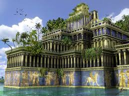
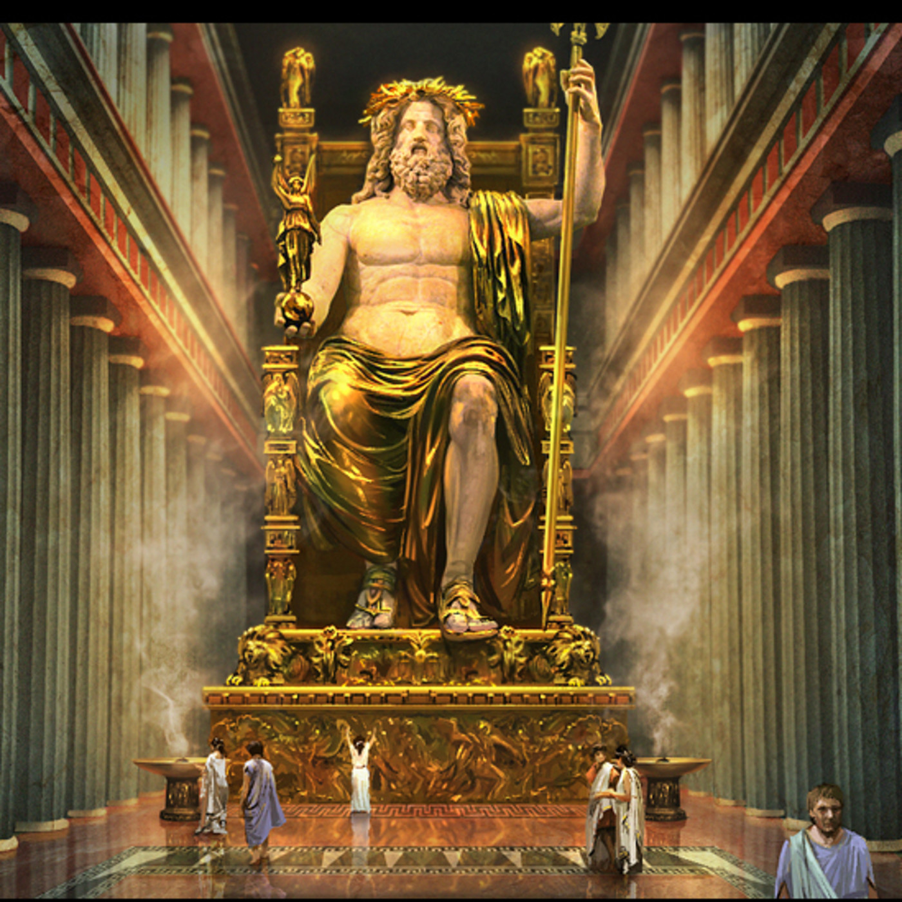
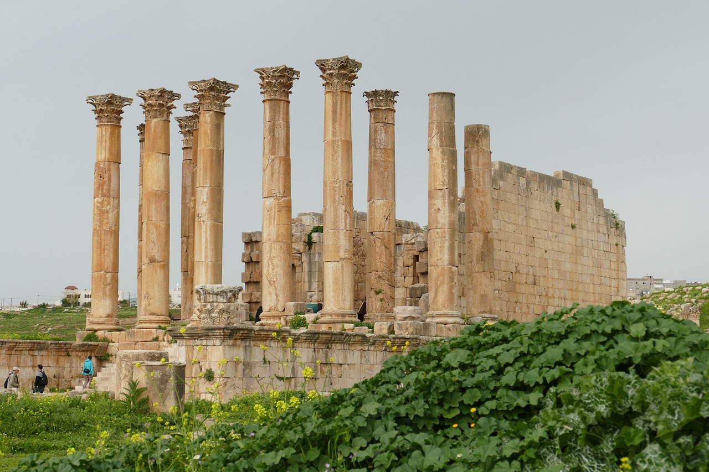
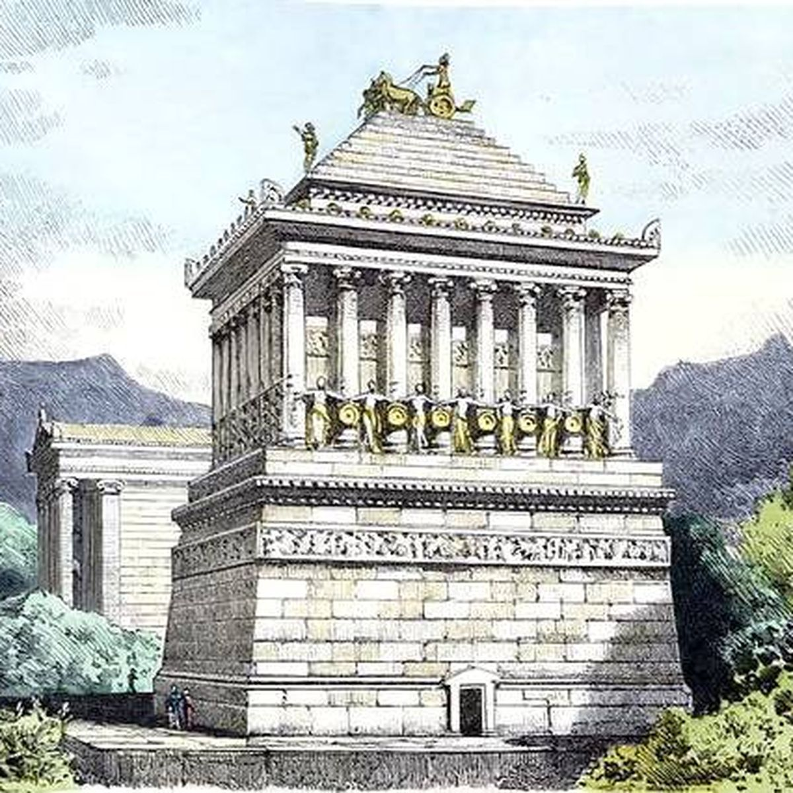
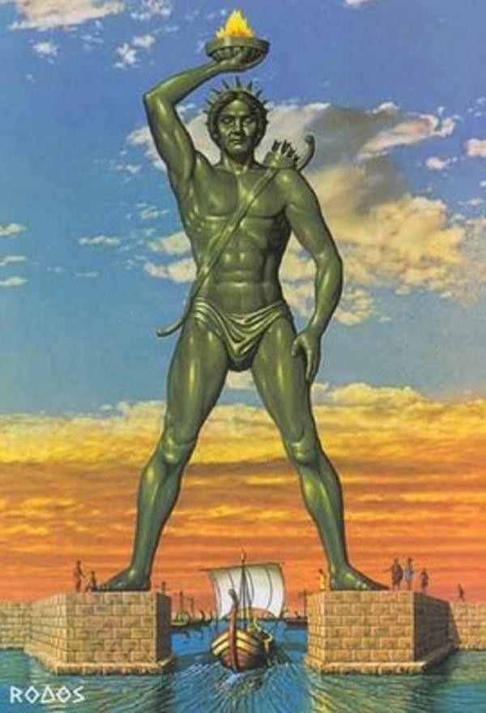

Las Pirámides de Giza (Egipto): Construidas alrededor del 2580 a.C.,
las pirámides de Giza son la única maravilla antigua que aún existe.
Estas tres pirámides, conocidas como la Gran Pirámide, la Pirámide de Khafre y
la Pirámide de Menkaura, fueron erigidas como tumbas para los faraones.
Ubicación: Guiza (Egipto) Altura máx: 146,7 m (originalmente) Altura: 138,8 m (actualmente) Longitud: 230,363 m. Función: Tumba, Monumento Materiales: Caliza, Granito, Basalto, Mortero Estilo arquitectónico: Arquitectura del Antiguo Egipto
Los Jardines Colgantes de Babilonia (Irak): Construidos alrededor del 600 a.C.,
los jardines supuestamente fueron creados por el rey Nabucodonosor II para su esposa.
Consistían en terrazas de plantas y árboles construidas sobre estructuras elevadas.

Ubicación: Babilonia, a orillas del río Éufrates (Mesopotamia) (Actualmente, Iraq) Construcción: Por Nabucodonosor como regalo para su esposa Amytis de Media Tamaño: Desconocido
La Estatua de Zeus en Olimpia (Grecia): Creada por el escultor Fidias alrededor del 432 a.C.,
esta enorme estatua de oro y marfil representaba al dios griego Zeus. Se encontraba en el templo
de Zeus en Olimpia.

Ubicación: Templo de Zeus en Olimpia, Grecia. Creador: Fidias, uno de los escultores y artistas más famosos de la antigua Grecia. Material: Hecha de marfil y oro sobre un núcleo de madera. Altura: Altura estimada de alrededor de 12 metros (aproximadamente 40 pies).
El Templo de Artemisa en Éfeso (Turquía): Construido en el siglo VI a.C., este templo estaba
dedicado a la diosa Artemisa. Fue destruido y reconstruido varias veces antes de ser
finalmente destruido por los godos en el 268 d.C.

Ubicación: Antigua ciudad de Éfeso, en lo que hoy es Turquía. Tamaño y dimensiones: Tenía aproximadamente 137 metros (450 pies) de longitud, 69 metros (225 pies) de ancho y sus columnas tenían una altura de alrededor de 18 metros (60 pies). Estilo arquitectónico: El templo estaba construido en estilo jónico. Arquitecto: Quíos.
La Tumba de Mausolo en Halicarnaso (Turquía): Construida alrededor del 353 a.C.,
esta tumba monumental fue erigida por Artemisia II en honor a su esposo, el rey Mausolo.
La palabra "mausoleo" proviene de este monumento.

Ubicación: Ciudad de Halicarnaso, que es la actual Bodrum, en Turquía. Tamaño y dimensiones: Una base rectangular de aprox. 45 por 25 metros (148 por 82 pies).
La altura aprox. de 43 metros (140 pies). Arquitectos: Arquitectos Satyros y Pythius.
El Coloso de Rodas (Grecia): Construido alrededor del 280 a.C.,
esta enorme estatua de bronce representaba al dios Helios y estaba ubicada en la isla de Rodas.
Se cree que fue destruido en un terremoto alrededor del 226 a.C.

Ubicación Isla de Rodas, en Grecia. Dimensiones: Aprox. 33 metros (108 pies) de altura. Creador: Quares de Lindos (Escultor). Material: Era una estatua de bronce y hierro construida sobre un armazón de piedra y mármol.
El Faro de Alejandría (Egipto): Construido en la isla de Faros alrededor del 280 a.C.,
este faro tenía la función de guiar a los marineros hacia el puerto de Alejandría.
Fue destruido por terremotos en el siglo XIV.
Ubicación: Isla de Pharos, en el puerto de Alejandría, Egipto. Dimensiones: Altura aprox. entre 100 y 130 metros (330-430 pies). Material: Piedra y mármol. Construcción: Se cree que el faro fue construido durante el reinado de Ptolomeo II Filadelfo.